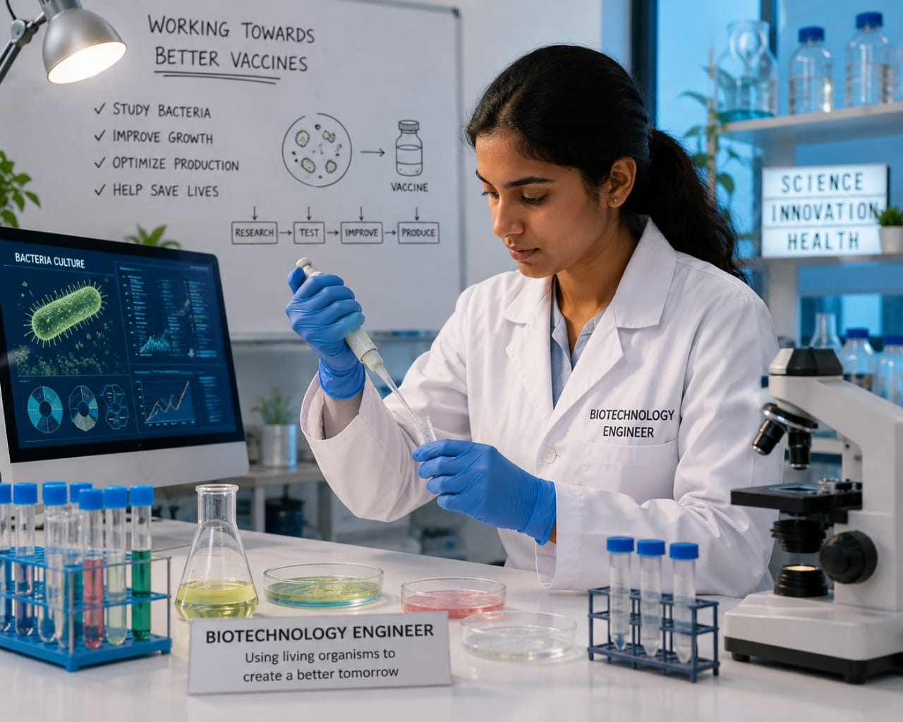

- Imagine a scientist working in a research center discovers a new vaccine to treat cancer.
- The vaccine is developed using living cells such as bacteria, yeast, or other microorganisms.
- The next step is to produce large quantities of the vaccine from these living cells.
- To produce large quantities of the vaccine, the living cells need to be modified.
- Biotechnology Engineers work with these cells and help improve their performance.
- They may provide proper nutrients, create a good environment for growth, or modify the cells to help produce more vaccine.
- 👉 In simple words: Biotechnology Engineers work with living cells to help produce useful products such as medicines and vaccines.
Biotechnology Engineer
🧑🎨 What Do They Do?

🎓 How to Become a Biotechnology Engineer
These diploma courses help students learn biotechnology, laboratory techniques, microbiology, and biological production systems.
Diploma in Biotechnology Engineering
Duration: 3 Years
Eligibility: 10th Pass with Science and Mathematics (Minimum 35%–50% marks)
Exam: State Polytechnic Entrance Exams (e.g., JEECUP, Delhi CET, POLYCET)
Note: Students who complete this diploma can work in biotechnology laboratories, food industries, pharmaceutical companies, and research centers, or continue higher studies in Biotechnology Engineering.
B.Tech / B.E. in Biotechnology
Duration: 4 Years
Eligibility: 10+2 with PCM or PCB (Minimum 50%–60% aggregate)
Exam: JEE Main / JEE Advanced / State Level Entrance Exams (MHT CET, KCET, WBJEE) / University Entrance Exam (VITEEE)
📝 Exam Details
(Click on an exam name to see full details)
JEE Main JEE Advanced State Engineering Entrance Exams University Entrance ExamsB.Tech Lateral Entry in Biotechnology
Duration: 3 Years (Direct admission into 2nd year)
Eligibility: 3-Year Engineering Diploma in a relevant stream (Minimum 45%–50% marks)
Exam: State Lateral Entry Entrance Tests (LET) (e.g., JELET, OJEE LE, TS ECET)
Note:
(Age limits, marks, and admission process may vary depending on the college or state. These courses are available in many colleges and universities across India. You can choose colleges based on your location, budget, and entrance exams.)
🏛️ Top Colleges for Biotechnology Engineering
(Tap on a college to view the details)
After 10th Pass (Diploma Programs)
Government Polytechnic, Mumbai PSG Polytechnic College, Coimbatore Government Polytechnic College, Kalamassery MEI Polytechnic, BangaloreAfter 12th Pass (Bachelor's Degrees)
Indian Institute of Technology (IIT) Delhi, New Delhi Indian Institute of Technology (IIT) Kharagpur, Kharagpur Indian Institute of Technology (IIT) Guwahati, Guwahati Vellore Institute of Technology (VIT), Vellore Delhi Technological University (DTU), New DelhiAfter Diploma (Lateral Entry)
Jadavpur University, Kolkata COEP Technological University, Pune Anna University (MIT Campus), Chennai Guru Gobind Singh Indraprastha University (GGSIPU), New DelhiAfter Graduation (Master's Degrees & Deep R&D)
Indian Institute of Technology (IIT) Bombay, Mumbai Indian Institute of Technology (IIT) Delhi, New Delhi Indian Institute of Technology (IIT) Kharagpur, Kharagpur Indian Institute of Science (IISc), Bangalore Institute of Chemical Technology (ICT), MumbaiSTEP 1
Imagine you are working as a Biotechnology Engineer.
STEP 2
Scientists discover a new vaccine that could help people.
STEP 3
You study the bacteria used to produce the vaccine.
STEP 4
You provide the right nutrients and environment for the bacteria to grow.
STEP 5
You improve the bacteria so they can produce more vaccine.
STEP 6
Your work helps make large-scale vaccine production possible.
STEP 7
If you enjoy biology, technology, and solving problems, this career may be right for you.
Where do Biotechnology Engineers work? (Job Roles + Growth)
These are some roles you can explore in Biotechnology Engineering.
You usually start with beginner roles and grow with experience.
🟢 Beginner Roles
🧫
Junior Lab Assistant
(After Diploma)
Prepares biological samples and helps maintain laboratory equipment.
📋
Graduate Engineer Trainee (GET)
(After B.Tech)
Assists scientists with experiments and laboratory testing.
🔵 Mid-Level Roles
🧬
Biotechnology Engineer
(After B.Tech + Experience)
Works with bacteria and other microorganisms to develop useful products.
⚗️
Bioprocess Engineer
(After B.Tech Specialization + Experience)
Develops production methods for medicines, vaccines, and biological products.
🟣 Advanced Roles
🧪
Biotech R&D Manager
(After M.Tech / Advanced Specialization)
Leads biotechnology research projects and product development teams.
🏢
VP of Biotechnology
(After Executive Program + Experience)
Leads biotechnology divisions and oversees major research programs.
💊
Pharmaceutical Companies
Develop medicines, vaccines, and healthcare products for people.
🧬
Biotechnology Companies
Use living organisms to create innovative products and technologies.
🔬
Research & Development Centers
Develop new medicines, vaccines, and biological technologies.
🍎
Food & Beverage Industries
Improve food production, quality, nutrition, and safety using biotechnology.
🌱
Agricultural Biotechnology Companies
Develop improved crops, seeds, and sustainable farming technologies.
🌍
Global Biotech Companies
Work on advanced biotechnology projects used across the world.
(Click Yes or No for each question)
1. Have you heard about vaccines?
2. Have you ever wondered how vaccines and medicines are discovered?
3. Are you interested in learning how bacteria and other tiny living organisms are used to develop vaccines and medicines?
4. Are you interested in working in laboratories and research centers?
5. Imagine scientists have discovered a new vaccine. Your job is to work with bacteria and other tiny living organisms to help produce more of the vaccine. The vaccine you helped develop could help millions of people. Does this sound exciting to you?